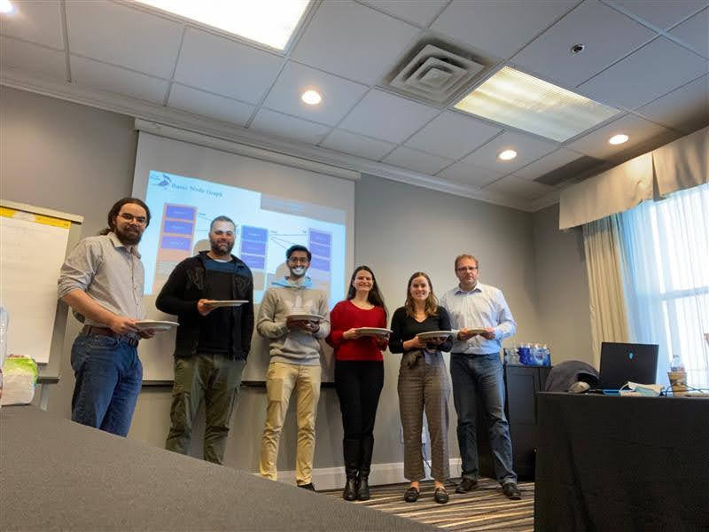

Software Developer (Sep 2021 - Dec 2021)
Bastian Solutions is a Toyota Advanced Logistics company that specializes in material handling, robotics integration, and providing automated solutions for distribution, manufacturing, and order fulfillment centers around the world. Bastian provides automation solutions in the following areas: conveyor/sortation, goods to person, automated storage and retrieval systems (ASRS), picking, and automated guided vehicles (AGVs). The company has too many automated solutions to go into detail about each item here, but you can explore all of their projects here. The bread and butter of Bastian’s automated solutions is their software known as Exacta. Exacta is broken into three main components: ExactaWCS, ExactaWMS, ExactaWES. ExactaWCS is the warehouse control system that facilitates material and information flow to order fulfillment technology and material handling equipment. ExactaWMS is a warehouse management system that tracks inventory, inbound and outbound traffic, and allows customers to customize and view their warehouse in ways that best benefit their requirements. ExactaWES is the warehouse execution system, which is a combination of WCS and MCS. In 1952, Elgan Stark founded the company that would eventually become Bastian Solutions (then known as E.C Stark Co. Inc. At this point, the company supplied conventional material handling products. In 1971, the company was renamed to Bastian Handling Corporation. In 1980, the company shifted their focus to become more involved with automated solutions and information systems that control the flow of products in warehouses and manufacturing facilities. Between the years of 2005 and 2012, four major changes occurred: Bastian created its first robotics division, the company started manufacturing its own line of conveyor, more offices opened up around the world (Toronto, Montreal, Atlanta, etc.), and began operation under the new name Bastian Solutions. The final major change to the company occurred in 2017 when Bastian Solutions was acquired by Toyota Advanced Logistics. Currently, Bastian Solutions has offices spread throughout Canada, the United States, and Mexico and operates with the main goal of providing clients a competitive advantage by designing and delivering world- class distribution and production solutions.
At Bastian Solutions, I was a member of Team Bluejay, a fully remote team working on a project titled “Project Sapphire.” Bluejay was a very small team (only 5 other members, bringing the total to 6 including me) which ended up working in my favour because it meant that I was given important tasks that directly benefited the project. I joined the team at a very early stage in the project life cycle. When I first started working at Bastian in September, the team was in the process of getting a minimum viable product (MVP) together to prove that the product would be useful for Bastian. I believe that I am not allowed to go into too much detail about the project for confidentiality reasons, but essentially, Project Sapphire is an emulation engine that models the flow of materials through warehouses.
As a software engineer for Team Bluejay, I was given the opportunity to work on multiple different aspects of software development. This included testing, backend, frontend, design, and code reviews. I was also introduced to many new tools and technologies that I was able to get comfortable with using over the last four months. The majority of my work was done in C# using the .Net framework and Visual Studio as my primary code editor.
Like I said before, I worked on many different tasks throughout the term. During the MVP stage of the project, I spent some time building out unit tests for the project code through XUnit. This allowed me to become more familiar with the code and really helped my understanding of the code base. I also did some work on the front-end web app GUI. This was done through Blazor and C#. I had never heard of Blazor before this term, but after getting the chance to use it, I can definitely see its value.
Once the MVP was complete, the team shifted to a complete rebuild and redesign of the discrete emulation engine (DES). At this point, I was tasked with designing and building out a class hierarchy that allowed us to model the loads that would be moving through the warehouses. This was a task that would be a part of the foundation of the entire system, so I was very thankful to be trusted with it. There are a lot of different parts that makeup this “load” object, so a lot of thought had to be put into the design. After the design was complete and approved, I implemented the class hierarchy in C# and implemented more unit tests using XUnit. This task gave me direct exposure to the entire implementation process of a new feature and gave me experience with designing code in such a way that it fits into an already existing system.
Near the end of the term, I shifted my focus to three main tasks: implementing a metrics gathering system, laying out the facilities that we were modeling in YAML configuration files, and implementing the PLC logic for the different parts of the facility. In terms of the metrics, I was responsible for designing a system that allowed us to track different statistics about loads as they move through the warehouse. This task allowed me to learn many new concepts as well as improve my existing skills. Specifically, I was able to get an understanding of how events work in C#, and how to trigger certain stuff to happen based off of when other events occur. Additionally, I gained experience with using local databases because I had to utilize LiteDB in order to store the metrics information that was gathered locally. Also, implementing the metrics system allowed me to get a better understanding of asynchronous programming since the handling of the metrics had to be completely asynchronous so that it didn’t affect the performance of the actual emulation. In terms of the YAML configuration files, they turned out to be a much greater challenge than I had expected. At first, one would think that this is a fairly easy task, however, as the pieces that we were trying to build got more complex, I (along with my team members) had to get more creative with our design in order to layout the facility in a way that models the real life version accurately. This task definitely improved my creative thinking and designing ability because I had to spend time discussing and thinking about how we would lay out more complex parts of a facility (like AGVs and ASRS for example). My third main focus, implementing PLC logic, was the most challenging task, but I found it a very cool and interesting one nonetheless. I was responsible for implementing the logic in the PLCs that reflect how they work in the real facility. This meant making sure that loads were correctly scanned at the different scanners, ensuring that pieces of conveyor correctly stopped/started when they needed to, and controlling where the load went to next (since in a lot of cases, there were multiple places where a load could end up). Having the opportunity to work on this side of the project really helped in my understanding of how our DES engine actually works and how PLCs function in the real world.
Overall, my four month term here allowed me to complete a variety of different tasks. Some of these allowed me directly leverage the skills that I learned in class (general coding habits, polymorphism, inheritance, and unit testing to name a few), while other tasks forced me to do some research online and develop new skills since they were not touched on classes (YAML configuration files and Blazor front end work for example).
I could not have asked for a better second work-term experience, Bastian gave me the chance to improve my development skills, while allowing me to work alongside some amazing people! One interesting aspect of the term that I think is sort of rare to experience as a co-op student was the fact that I got to ride the wave with the team and see our DES engine come together with my own eyes. Like I said, when I first joined, the team was in an MVP stage where we had a working engine, but it was very bare-bones. Then we shifted to a completely new system, and I saw the engine improve drastically. Finally, in my last month, the team was given their first project to emulate a facility for another company in order to help them visualize what is going wrong in their facility. Thus, it was very cool to see the project go from something very basic to a proper and useful emulation tool. To say I learned a lot at Bastian Solutions would be a huge understatement. Although this term was only for four months, the knowledge and skills that I have gained reflect that of an eight month term and I am very grateful to have had the chance to work at such an amazing company.
Special thanks to the entire development team for welcoming me with open arms and always being willing to help out! I could not have asked for a better group of people to spend my second co-op term with!
Finally, a huge thank you to my supervisor, Samuel Oosterhuis for always being availble when I needed help. Hopping into debugging sessions on Teams with him greatly improved my understanding of how certain aspects of the source code worked and also improved my development skills as a whole!
